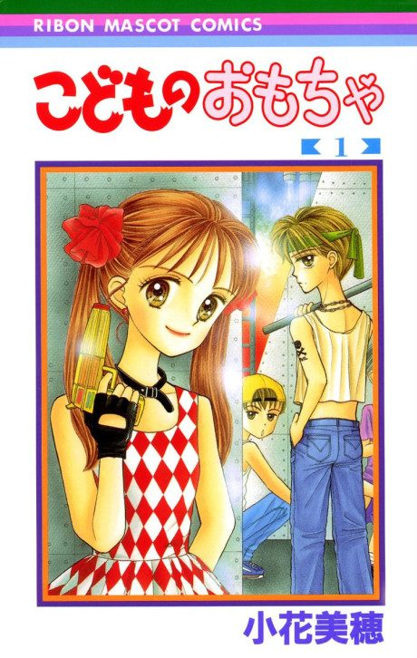

Anime
Anime
MangaKodocha
こどものおもちゃ
The anime takes the story to Unclear.
7.8AniList
—Animeter
102 epEpisodes
Is it worth pushing through?
Built from what visitors report across all 102 episodes.
Loading reports…Checking what other people said about this one.
Sign in above with your email to add your report.